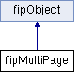

Multi-page file stream. More...
#include <FreeImagePlus.h>

Public Member Functions | |
| fipMultiPage (BOOL keep_cache_in_memory=FALSE) | |
| Constructor. More... | |
| virtual | ~fipMultiPage () |
| Destructor Close the file stream if not already done. More... | |
| BOOL | isValid () const |
| Returns TRUE if the multi-page stream is opened. More... | |
| operator FIMULTIBITMAP * () | |
| Returns a pointer to the FIMULTIBITMAP data. More... | |
| BOOL | open (const char *lpszPathName, BOOL create_new, BOOL read_only, int flags=0) |
| Open a multi-page file stream. More... | |
| BOOL | open (fipMemoryIO &memIO, int flags=0) |
| Open a multi-page memory stream as read/write. More... | |
| BOOL | open (FreeImageIO *io, fi_handle handle, int flags=0) |
| Open a multi-page image as read/write, using the specified FreeImageIO struct and fi_handle, and an optional flag. More... | |
| BOOL | close (int flags=0) |
| Close a file stream. More... | |
| BOOL | saveToHandle (FREE_IMAGE_FORMAT fif, FreeImageIO *io, fi_handle handle, int flags=0) const |
| Saves a multi-page image using the specified FreeImageIO struct and fi_handle, and an optional flag. More... | |
| BOOL | saveToMemory (FREE_IMAGE_FORMAT fif, fipMemoryIO &memIO, int flags=0) const |
| Saves a multi-page image using the specified memory stream and an optional flag. More... | |
| int | getPageCount () const |
| Returns the number of pages currently available in the multi-paged bitmap. More... | |
| void | appendPage (fipImage &image) |
| Appends a new page to the end of the bitmap. More... | |
| void | insertPage (int page, fipImage &image) |
| Inserts a new page before the given position in the bitmap. More... | |
| void | deletePage (int page) |
| Deletes the page on the given position. More... | |
| BOOL | movePage (int target, int source) |
| Moves the source page to the position of the target page. More... | |
| FIBITMAP * | lockPage (int page) |
| Locks a page in memory for editing. More... | |
| void | unlockPage (fipImage &image, BOOL changed) |
| Unlocks a previously locked page and gives it back to the multi-page engine. More... | |
| BOOL | getLockedPageNumbers (int *pages, int *count) const |
| Returns an array of page-numbers that are currently locked in memory. More... | |
 Public Member Functions inherited from fipObject Public Member Functions inherited from fipObject | |
| virtual | ~fipObject () |
| Destructor. More... | |
Protected Attributes | |
| FIMULTIBITMAP * | _mpage |
| Pointer to a multi-page file stream. More... | |
| BOOL | _bMemoryCache |
| TRUE when using a memory cache, FALSE otherwise. More... | |
Detailed Description
Multi-page file stream.
fipMultiPage encapsulates the multi-page API. It supports reading/writing multi-page TIFF, ICO and GIF files.
Constructor & Destructor Documentation
◆ fipMultiPage()
| fipMultiPage::fipMultiPage | ( | BOOL | keep_cache_in_memory = FALSE | ) |
Constructor.
- Parameters
-
keep_cache_in_memory When it is TRUE, all gathered bitmap data in the page manipulation process is kept in memory, otherwise it is lazily flushed to a temporary file on the hard disk in 64 Kb blocks.
◆ ~fipMultiPage()
|
virtual |
Destructor Close the file stream if not already done.
Member Function Documentation
◆ appendPage()
| void fipMultiPage::appendPage | ( | fipImage & | image | ) |
Appends a new page to the end of the bitmap.
- Parameters
-
image Image to append
- See also
- FreeImage_AppendPage
◆ close()
| BOOL fipMultiPage::close | ( | int | flags = 0 | ) |
Close a file stream.
- Parameters
-
flags Save flags. The signification of this flag depends on the image to be saved.
- Returns
- Returns TRUE if successful, returns FALSE otherwise
- See also
- FreeImage_CloseMultiBitmap
◆ deletePage()
| void fipMultiPage::deletePage | ( | int | page | ) |
Deletes the page on the given position.
- Parameters
-
page Page number
- See also
- FreeImage_DeletePage
◆ getLockedPageNumbers()
| BOOL fipMultiPage::getLockedPageNumbers | ( | int * | pages, |
| int * | count | ||
| ) | const |
Returns an array of page-numbers that are currently locked in memory.
When the pages parameter is NULL, the size of the array is returned in the count variable. You can then allocate the array of the desired size and call getLockedPageNumbers again to populate the array.
- Returns
- Returns TRUE if successful, returns FALSE otherwise
- See also
- FreeImage_GetLockedPageNumbers
◆ getPageCount()
| int fipMultiPage::getPageCount | ( | ) | const |
Returns the number of pages currently available in the multi-paged bitmap.
- See also
- FreeImage_GetPageCount
◆ insertPage()
| void fipMultiPage::insertPage | ( | int | page, |
| fipImage & | image | ||
| ) |
Inserts a new page before the given position in the bitmap.
- Parameters
-
page Page number. Page has to be a number smaller than the current number of pages available in the bitmap. image Image to insert
- See also
- FreeImage_InsertPage
◆ isValid()
|
virtual |
Returns TRUE if the multi-page stream is opened.
Implements fipObject.
◆ lockPage()
| FIBITMAP* fipMultiPage::lockPage | ( | int | page | ) |
Locks a page in memory for editing.
You must call unlockPage to free the page
Usage :
fipMultiPage mpage; // ... fipImage image; // You must declare this before image = mpage.lockPage(2); if(image.isValid()) { // ... mpage.unlockPage(image, TRUE); }
- Parameters
-
page Page number
- Returns
- Returns the page if successful, returns NULL otherwise
- See also
- FreeImage_LockPage
◆ movePage()
| BOOL fipMultiPage::movePage | ( | int | target, |
| int | source | ||
| ) |
Moves the source page to the position of the target page.
- Parameters
-
target Target page position source Source page position
- Returns
- Returns TRUE if successful, returns FALSE otherwise
- See also
- FreeImage_MovePage
◆ open() [1/3]
| BOOL fipMultiPage::open | ( | const char * | lpszPathName, |
| BOOL | create_new, | ||
| BOOL | read_only, | ||
| int | flags = 0 |
||
| ) |
Open a multi-page file stream.
- Parameters
-
lpszPathName Name of the multi-page bitmap file create_new When TRUE, it means that a new bitmap will be created rather than an existing one being opened read_only When TRUE the bitmap is opened read-only flags Load flags. The signification of this flag depends on the image to be loaded.
- Returns
- Returns TRUE if successful, returns FALSE otherwise
- See also
- FreeImage_OpenMultiBitmap
◆ open() [2/3]
| BOOL fipMultiPage::open | ( | fipMemoryIO & | memIO, |
| int | flags = 0 |
||
| ) |
Open a multi-page memory stream as read/write.
- Parameters
-
memIO Memory stream. The memory stream MUST BE a wrapped user buffer. flags Load flags. The signification of this flag depends on the image to be loaded.
- Returns
- Returns TRUE if successful, returns FALSE otherwise
- See also
- FreeImage_LoadMultiBitmapFromMemory
◆ open() [3/3]
| BOOL fipMultiPage::open | ( | FreeImageIO * | io, |
| fi_handle | handle, | ||
| int | flags = 0 |
||
| ) |
Open a multi-page image as read/write, using the specified FreeImageIO struct and fi_handle, and an optional flag.
- Parameters
-
io FreeImageIO structure handle FreeImage fi_handle flag The signification of this flag depends on the image to be read.
- Returns
- Returns TRUE if successful, FALSE otherwise.
- See also
- FreeImage_OpenMultiBitmapFromHandle
◆ operator FIMULTIBITMAP *()
|
inline |
Returns a pointer to the FIMULTIBITMAP data.
Used for direct access from FREEIMAGE functions or from your own low level C functions.
◆ saveToHandle()
| BOOL fipMultiPage::saveToHandle | ( | FREE_IMAGE_FORMAT | fif, |
| FreeImageIO * | io, | ||
| fi_handle | handle, | ||
| int | flags = 0 |
||
| ) | const |
Saves a multi-page image using the specified FreeImageIO struct and fi_handle, and an optional flag.
- Parameters
-
fif Format identifier (FreeImage format) io FreeImageIO structure handle FreeImage fi_handle flag The signification of this flag depends on the multi-page image to be saved.
- Returns
- Returns TRUE if successful, FALSE otherwise.
- See also
- FreeImage_SaveMultiBitmapToHandle, FreeImage documentation
◆ saveToMemory()
| BOOL fipMultiPage::saveToMemory | ( | FREE_IMAGE_FORMAT | fif, |
| fipMemoryIO & | memIO, | ||
| int | flags = 0 |
||
| ) | const |
Saves a multi-page image using the specified memory stream and an optional flag.
- Parameters
-
fif Format identifier (FreeImage format) memIO FreeImage memory stream flag The signification of this flag depends on the image to be saved.
- Returns
- Returns TRUE if successful, FALSE otherwise.
- See also
- FreeImage_SaveMultiBitmapToMemory, FreeImage documentation
◆ unlockPage()
| void fipMultiPage::unlockPage | ( | fipImage & | image, |
| BOOL | changed | ||
| ) |
Unlocks a previously locked page and gives it back to the multi-page engine.
- Parameters
-
image Page to unlock changed When TRUE, the page is marked changed and the new page data is applied in the multi-page bitmap.
- See also
- FreeImage_UnlockPage
Member Data Documentation
◆ _bMemoryCache
|
protected |
TRUE when using a memory cache, FALSE otherwise.
◆ _mpage
|
protected |
Pointer to a multi-page file stream.
The documentation for this class was generated from the following file: